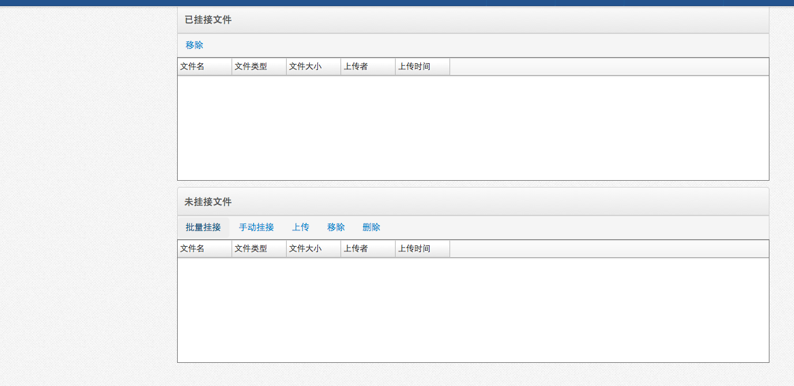

-
- 操作流程
- 点击首页功能菜单［档案管理－档案管理］，打开档案管理页面。
- 电子全文包括档案电子全文的显示、挂接、批量挂接、下载、删除。
- 档案全文的显示
-
-
- 点击档案列表中的全文标示。弹出当前档案挂接的电子全文列表。
- 显示了电子文件的名称、大小、格式等信息。可点击［下载］按钮（如果有全文下载权限），下载（或打开）电子文件。点击［删除］按钮，可以删除电子文件。
- 电子全文挂接
- 勾选档案数据，只能单选，点击［全文挂接－挂接］按钮，打开全文挂接框。
-
-
- 点击［上传］按钮，打开文件上传框，点击［添加文件］按钮，选择需要上传的电子文件，上传后关闭，自动显示电子文件列表。
-
- 电子全文批量挂接
- 勾选档案数据，可以单选或多选，点击［全文挂接－批量挂接］按钮，打开全文挂接页签。
-
-
-

- 批量挂接页签分为三个部分，［挂接档案］、［已挂接文件］、［未挂接文件］。
- ［挂接档案］显示要批量挂接的档案数据。［已挂接文件］显示已经批量挂接的电子全文。［未挂接文件］显示等待批量挂接的电子全文。
- 首先在［未挂接文件］里点击［上传］按钮，上传要批量挂接的电子文件。
-
- 上传成功后，可以点击［批量挂接］按钮，根据选择的“挂接条件”，以电子文件名与挂接条件相批对，自动挂接。也可以选择档案数据，在选择电子文件，点击［手动挂接］按钮，手动挂接文件。
- 挂接成功后，挂接的电子全文从［未挂接文件］移动到［已挂接文件］里。在［已挂接文件］可以移除已挂接的电子全文。
- 批量挂接完毕后，点击［保存］按钮，保存挂接结果。